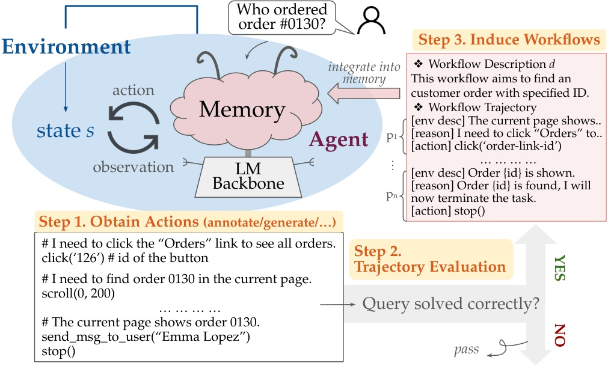
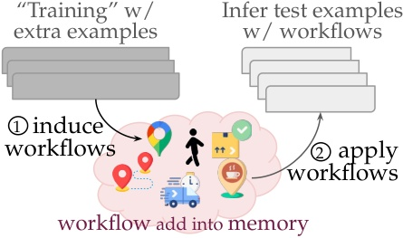
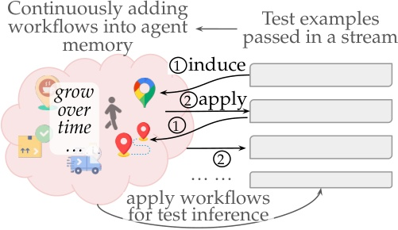
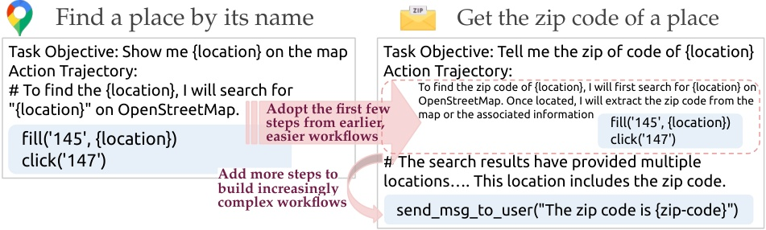

웹 에이전트는 무엇을 기억해야 할까
흐름: exemplar prompting의 출발점 → trajectory memory의 등장 → workflow abstraction으로의 진화
Synapse와 AWM을 같이 보면 메모리의 진화가 보인다
이 두 논문을 한 번에 읽으면, 웹 에이전트 연구가 결국 "무엇을 memory item으로 저장할 것인가"를 점점 더 정교하게 다듬어온 과정처럼 보인다.
웹 에이전트는 긴 HTML 상태를 읽고, 여러 단계를 거쳐, 중간에 실수하면 전체 태스크를 망치기 쉽다. 그래서 초기 연구는 "좋은 예시를 더 잘 넣는 법"에 집중했다. Synapse는 여기서 중요한 전환점을 만든다. 다음 행동 하나를 맞히는 MCQ나 고수준 plan 대신, 성공 trajectory 전체를 exemplar로 prompt 안에 넣어주자는 것이다.
그런데 trajectory 자체를 기억하는 방식에도 한계는 있다. 성공 예시는 풍부하지만, 사이트 구조와 구체 문맥에 꽤 묶여 있기 때문이다. AWM은 바로 이 지점에서 한 단계 더 나아간다. 성공 trajectory를 그대로 저장하는 대신, 그 안에 반복되는 sub-routine을 workflow라는 추상 단위로 다시 저장한다.
즉 두 논문의 관계를 한 줄로 요약하면 이렇다.
- Synapse는
성공 trajectory를 기억한다. - AWM은 trajectory 안의
재사용 가능한 workflow를 기억한다.
이 차이는 단순한 저장 형식 차이가 아니다. 웹 에이전트가 비슷한 작업을 얼마나 빨리 배우고, 다른 태스크로 얼마나 멀리 일반화할 수 있는지를 바꾸는 차이다.
Synapse: trajectory를 exemplar로 기억하자
흐름: 긴 raw state 문제 → state abstraction → trajectory-as-exemplar prompting → exemplar memory
Synapse의 출발점은 "예시를 넣고 싶어도 넣을 수 없다"는 문제다
Synapse는 웹 에이전트의 병목을 추론 능력 자체보다, 웹 상태와 exemplar 포맷이 context window를 너무 비효율적으로 쓴다는 데서 찾는다.
논문은 세 가지 문제를 동시에 짚는다. 첫째, 웹페이지 상태가 너무 길어서 few-shot exemplar를 많이 넣을 수 없다. 둘째, 기존 exemplar 포맷은 high-level plan이나 MCQ 위주라 complete trajectory를 보여주지 못한다. 셋째, task-specific exemplar에 묶여 있어서 새로운 태스크로 일반화가 약하다.
"The limited context length of LLMs and complex computer states restrict the number of exemplars..."
즉 Synapse는 "웹 탐색에서 필요한 exemplar는 무엇인가?"를 다시 묻는다. 그리고 답을 trajectory로 둔다. 어떤 상태가 주어졌고, 거기서 어떤 action이 나왔고, 그 결과 다음 상태가 어떻게 이어졌는지까지 보여주는 성공 trajectory 전체가 가장 풍부한 exemplar라는 것이다.

첫 번째 부품은 state abstraction이다
trajectory exemplar를 넣기 전에 먼저 해야 할 일은, 상태를 줄여서 context를 되찾는 것이다.
Synapse는 raw HTML이나 전체 UI 상태를 그대로 LLM에 넣지 않는다. task와 관련 있는 observation만 남기는 state abstraction 단계를 둔다. 이 과정 덕분에 한 상태가 차지하는 토큰 수가 줄고, 그만큼 더 많은 exemplar를 넣을 수 있다. 동시에 task-irrelevant 정보가 줄어들어 모델이 어디를 봐야 하는지도 더 명확해진다.
이 단계는 단순 전처리가 아니라 Synapse 전체를 가능하게 하는 기반이다. 논문이 MiniWoB++의 book-flight처럼 긴 상태와 긴 의사결정을 동시에 요구하는 태스크를 처음 안정적으로 푼 이유도 여기서 시작한다.
두 번째 부품은 trajectory-as-exemplar prompting이다
Synapse의 가장 큰 기여는 plan도 MCQ도 아닌, 성공 trajectory 자체를 few-shot exemplar로 쓰는 prompting 구조를 밀어붙였다는 점이다.
기존 방법이 다음 action 하나를 고르거나, 고수준 계획만 알려주는 데 머물렀다면, Synapse는 observation-action pair가 이어지는 full trajectory를 보여준다. 이 구조는 모델이 "이 상태에서는 이 버튼을 눌러라" 같은 step-local mapping만 배우는 게 아니라, 어떤 흐름으로 태스크가 전개되는지까지 보게 만든다.
"Trajectory-as-exemplar prompting ... utilizes full successful trajectories as few-shot exemplars..."
그래서 repeated action이 많거나 long-horizon인 태스크에서 차이가 크게 난다. guess-number, use-spinner, use-autocomplete처럼 비슷한 동작이 여러 번 반복되는 문제는 각 step 정답만 따로 맞히는 방식으로는 잘 풀리지 않는데, trajectory exemplar는 그런 흐름 자체를 보여줄 수 있다.

세 번째 부품은 exemplar memory다
Synapse는 trajectory를 한 번 쓰고 버리지 않고 memory에 넣어, 비슷한 태스크가 오면 similarity search로 다시 꺼내 쓴다.
이 메모리 덕분에 에이전트는 task 이름이 완전히 같지 않아도 구조가 비슷한 예시를 가져올 수 있다. email-inbox-nl-turk에서 배운 흐름을 email-inbox-forward-nl-turk에 옮기고, multi-layouts에서 본 패턴을 multi-orderings에도 적용하는 식이다. 논문이 48개 task의 demonstration만으로 64개 task를 푼다고 강조하는 이유도 여기에 있다.
하지만 Synapse는 동시에 다음 세대 연구가 왜 더 추상적인 memory를 찾게 됐는지도 보여준다. trajectory는 정보가 풍부하지만, 여전히 사이트 구조와 구체 step에 묶이기 쉽다. 그래서 retrieval된 exemplar가 현재 문제와 충분히 가깝지 않으면 도움이 줄어든다. 특히 cross-domain generalization에서 그 한계가 더 또렷해진다.
Synapse의 의미는 "trajectory memory의 원형"을 만들었다는 데 있다
Synapse는 웹 에이전트에게 성공 trajectory를 exemplar memory로 저장하고 재사용하게 만든 대표적인 출발점이다.
MiniWoB++에서 평균 99.2% 성공률을 기록했고, Mind2Web에서도 state abstraction, TaE prompting, exemplar memory를 단계적으로 얹을수록 성능이 올라간다. 이 결과가 말하는 바는 단순하다. 웹 에이전트에서 좋은 memory는 "정답 action 하나"보다 "성공 trajectory 전체"에 더 가깝다는 것이다.
AWM: trajectory를 workflow로 추상화하자
흐름: 예시 기억의 한계 → workflow induction → offline/online memory update → compositional generalization
AWM은 trajectory exemplar를 한 단계 더 밀어붙인다
AWM의 핵심 질문은 이거다. 성공 trajectory를 그대로 기억하는 것보다, 그 안에서 반복되는 루틴만 뽑아 별도 memory unit으로 저장하는 편이 더 낫지 않을까?
논문은 기존 agent들이 fixed example set을 학습이나 ICL로 넣어 잘 작동하긴 하지만, task context나 environment가 조금만 바뀌면 쉽게 흔들린다고 본다. 이유는 예시를 통째로 보는 데 익숙할 뿐, 그 안에 있는 reusable routine을 분리해 배우지는 못하기 때문이다.
"Current agents mostly integrate a fixed set of given examples ... but results in a lack of robustness to changes in task contexts or environments."
AWM은 바로 여기서 workflow라는 중간 추상화 수준을 제안한다. primitive action보다 크고, task 전체 해법보다 작은 sub-routine 단위다. 예를 들면 장소 이름으로 장소 찾기, 검색 결과에서 특정 항목 고르기, 입력 필드를 채운 뒤 제출하기 같은 것들이다.
workflow는 description과 trajectory를 함께 가진다
AWM의 workflow는 짧은 규칙문 하나가 아니라, "무슨 일을 하는가"와 "어떻게 수행하는가"를 같이 담은 memory item이다.
각 workflow는 두 요소로 구성된다.
- workflow description: 이 루틴의 목표를 설명하는 자연어 요약
- workflow trajectory: 상태 설명, reasoning, action으로 이어지는 step sequence
즉 workflow는 trajectory를 버리는 게 아니라, 더 재사용하기 쉬운 형태로 다시 패키징한 것이다. 여기서 중요한 건 example-specific context를 일반 슬롯으로 바꾸는 추상화다. dry cat food를 Amazon에서 찾기를 그대로 남기는 대신, {product-name} 같은 변수화된 표현으로 바꿔 다른 태스크에도 재사용 가능하게 만든다.

AWM은 offline과 online 두 방식으로 memory를 키운다
AWM이 흥미로운 이유는 canonical example이 있든 없든, workflow memory를 agent adaptation의 핵심 루프로 삼는다는 데 있다.
Offline AWM에서는 훈련 전에 여러 example을 읽고 workflow repository를 먼저 만든다. 그런 다음 test-time에는 모든 태스크에 같은 workflow memory를 guidance로 넣는다. 반면 Online AWM에서는 테스트를 하나씩 풀면서, 성공한 trajectory를 evaluator가 통과시키면 그 자리에서 workflow로 바꿔 memory에 추가한다. 이후 태스크는 더 커진 memory를 가지고 푼다.
"Agents with AWM_online process test queries in a streaming fashion, where the agents conduct the loop of induce, integrate, and utilize workflows..."
이 차이는 크다. Synapse의 exemplar memory가 주어진 예시를 잘 찾아오는 retrieval memory에 가까웠다면, AWM의 memory는 inference 과정에서 실제로 자라나는 adaptive memory에 더 가깝다.


workflow memory가 주는 이득은 더 빠른 학습과 더 먼 일반화다
AWM의 성능 향상은 단순 retrieval 향상이 아니라, 더 작은 sub-routine을 더 넓은 태스크에 재조합할 수 있게 된 데서 나온다.
WebArena에서 AWM은 overall success rate 35.5로 BrowserGym의 23.5를 크게 넘고, human-written workflow를 쓰는 SteP의 33.0도 넘어선다. 게다가 평균 step 수도 5.9로 더 짧다. 즉 더 잘 맞히면서도 더 직접적인 경로로 해결한다.
Mind2Web에서도 이 차이는 선명하다. Synapse가 34.0 element accuracy와 30.6 step success rate를 보일 때, AWM은 각각 39.0, 34.6으로 올라간다. 논문 해석대로라면 concrete trajectory exemplar보다 abstract workflow가 element selection bias를 덜 만들고, 더 자주 재사용되는 sub-routine 단위라 활용 폭이 넓기 때문이다.
AWM의 진짜 매력은 compositional growth에 있다
AWM은 memory item 하나를 다음 memory item의 재료로 삼을 수 있다는 점에서, 단순 exemplar retrieval보다 한 단계 더 구조적이다.
논문이 드는 대표 예시는 Find a place by its name workflow다. 이 루틴을 먼저 배운 뒤, 나중에는 그 앞부분을 그대로 재사용하고 뒤에 zip code를 읽기 단계를 붙여 Get the zip code of a place 같은 더 복잡한 workflow를 만든다. 이런 식이면 memory는 flat하게 예시만 늘어나는 게 아니라, 점점 더 복잡한 절차를 조립하는 방향으로 자란다.

Synapse와 AWM은 정확히 어디서 갈라질까
흐름: 공통점 → memory item 차이 → adaptation 방식 차이 → 일반화 메커니즘 차이
둘 다 "예시를 잘 넣자"가 아니라 "기억의 단위를 다시 설계하자"는 논문이다
Synapse와 AWM은 모두 웹 에이전트 성능 문제를 단순 model scaling보다 memory design 문제로 다시 본다.
두 논문 모두 에이전트가 과거 성공 경험을 현재 decision에 연결해야 한다고 본다. 둘 다 text-based memory를 사용하고, 기존의 고정된 task-specific exemplar보다 더 재사용 가능한 단위를 찾는다. 그리고 둘 다 Mind2Web 같은 웹 벤치마크에서 일반화 문제를 정면으로 다룬다.
하지만 memory item의 수준이 다르다. Synapse는 full successful trajectory를 exemplar로 저장한다. AWM은 그 trajectory에서 common sub-routine을 추출해 workflow로 저장한다. 이 차이 하나가 이후 모든 성격 차이를 만든다.
Synapse는 풍부한 기억을 준다, AWM은 압축된 기술을 준다
Synapse memory가 "이 상황에서 이렇게 풀렸다"는 사례집에 가깝다면, AWM memory는 "이 목표를 달성하는 절차는 대체로 이렇다"는 업무 매뉴얼에 가깝다.
trajectory exemplar는 observation과 action의 실제 흐름을 그대로 보여줘 long-horizon task에 매우 강하다. 대신 사이트 구조나 구체 value에 묶이기 쉽다. 반대로 workflow는 example-specific context를 slot으로 바꾸고 더 자주 반복되는 부분만 남기기 때문에, 개별 사례의 풍부함은 조금 덜어내지만 더 넓은 태스크에 옮겨가기 쉽다.
그래서 Synapse의 메시지는 "성공 trajectory 자체가 가장 좋은 exemplar"이고, AWM의 메시지는 "성공 trajectory보다 그 안의 reusable routine이 더 좋은 memory unit일 수 있다"로 읽힌다.
Synapse는 retrieval memory이고, AWM은 adaptive memory에 가깝다
두 논문의 차이는 무엇을 저장하느냐뿐 아니라, memory가 언제 어떻게 업데이트되느냐에서도 드러난다.
Synapse의 exemplar memory는 주어진 demonstration이나 저장된 성공 예시를 similarity search로 가져오는 구조다. 물론 이 자체도 강력하지만, 기억의 성격은 비교적 정적이다. AWM은 여기에 induce → integrate → utilize 루프를 얹는다. 즉 태스크를 풀면서 성공 경험을 workflow로 바꾸고, 그 memory가 다음 태스크에 바로 영향을 준다.
이 점 때문에 AWM은 "에이전트가 테스트 중에도 점점 나아진다"는 적응 감각이 훨씬 강하다. WebArena의 빠른 초기 학습 곡선이나, unseen website/domain에서 online AWM이 특히 강한 이유도 여기서 설명된다.
그래서 두 논문은 경쟁작이라기보다 연속된 세대처럼 읽는 편이 맞다
Synapse가 trajectory memory의 강한 원형을 만들었고, AWM은 그 위에서 더 추상적이고 조합적인 memory로 한 단계 전진했다.
실제로 AWM 논문도 Mind2Web에서 Synapse를 직접 비교 대상으로 둔다. 그리고 그 차이를 "concrete experiences" 대 "abstract sub-routines"로 설명한다. 이 비교는 꽤 설득력 있다. Synapse가 trajectory exemplar의 가치를 증명했기 때문에, AWM은 그다음 질문인 "그 trajectory를 어떤 수준으로 추상화해야 더 잘 일반화되는가"를 밀어붙일 수 있었다.
결국 남는 질문
흐름: 성공 경험 저장 → 추상화 수준 선택 → 앞으로의 memory 연구 방향
웹 에이전트 memory의 핵심은 더 많이 기억하는 게 아니라, 더 좋은 단위를 기억하는 것이다
두 논문을 함께 읽고 나면, 웹 에이전트가 강해지는 방향은 메모리를 크게 만드는 것보다 memory item의 추상화 수준을 잘 고르는 데 있다는 점이 선명해진다.
Synapse는 성공 trajectory를 exemplar로 넣으면 웹 에이전트가 훨씬 잘 배운다는 걸 보여줬다. AWM은 거기서 한 걸음 더 나아가, trajectory 안의 반복 루틴을 workflow로 추상화하면 더 빨리 적응하고 더 멀리 일반화할 수 있음을 보여줬다.
그래서 이 두 논문은 각각 다른 답을 주는 것 같지만, 사실은 같은 질문 위에 서 있다. 웹 에이전트는 무엇을 기억해야 하는가?
Synapse의 답은 성공한 진행 흐름이다.
AWM의 답은 여러 흐름에 반복되는 재사용 가능한 절차다.
그리고 아마 그 다음 세대의 답은, workflow에 reflection, failure lesson, hierarchy까지 얹은 더 구조적인 memory일 가능성이 크다. 그런 의미에서 Synapse와 AWM을 같이 읽는 일은 논문 두 편을 요약하는 작업이 아니라, 웹 에이전트 memory 연구의 진화 방향을 한 번에 보는 일에 가깝다.